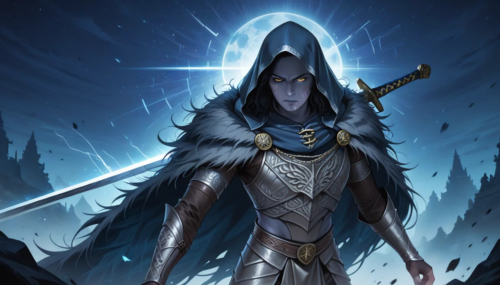

브라더, 기억나지? 특정 구간에서 보스를 만나도 어쩔 줄 몰라 하는 그 느낌 말이야. 나도 전직 스피드러너였을 때, '특정 패치로 막힌 글리치'를 재현하려다 밤새워본 적이 있어. 게임 내 숨겨진 요소는 보통 개발자의 의도보다 더 깊은 데이터 마이닝의 흔적을 남겨두곤 하지.
그때 발견한 건, 단순히 난이도가 아니라 버전 충돌 문제였어. 버전 1.04 패치 직후에 발생한 이벤트 ID 가 정상 범위보다 미세하게 벗어나서, 보스 AI 의 패턴이 예상과 달라졌거든. 마치 합정 근처 VIP 룸을 예약할 때, 정확한 시간대 설정을 놓치면 좋은 음색의 노래가 잘 들리지 않는 것처럼, 데이터 동기화가 안 되면 최적 경로가 사라지는 거지.
1 단계: 버전 고정 및 환경 점검
두 번째로 중요한 건 외부 변수 통제야. 마포나 홍대 근처 가라오케에서 단체 예약 시 좌석 배치가 결과에 영향을 미치듯, 게임 내 배경 이벤트의 상태도 고려해야 해. 예를 들어 파티원 수나 아이템 상태가 보스 등장 확률 데이터에 간접적으로 포함되기도 하지.
실패 방지 및 최적화 팁
마지막으로, 재현이 안 될 때는 하드웨어 가속 설정을 확인해봐. 그래픽 드라이버 업데이트와 게임 버전을 일치시키지 않으면 프레임 단위의 딜레이가 발생하곤 해. 1 초 차이도 스킵 성공 여부를 갈라놓을 수 있어.